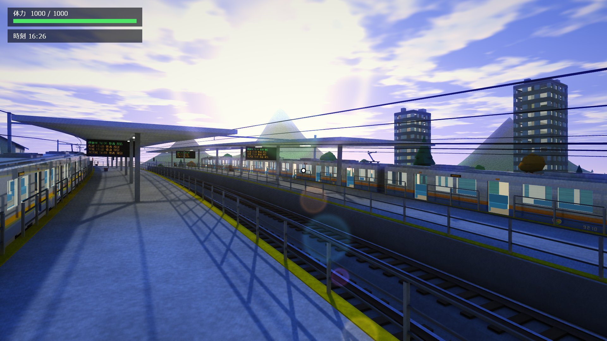
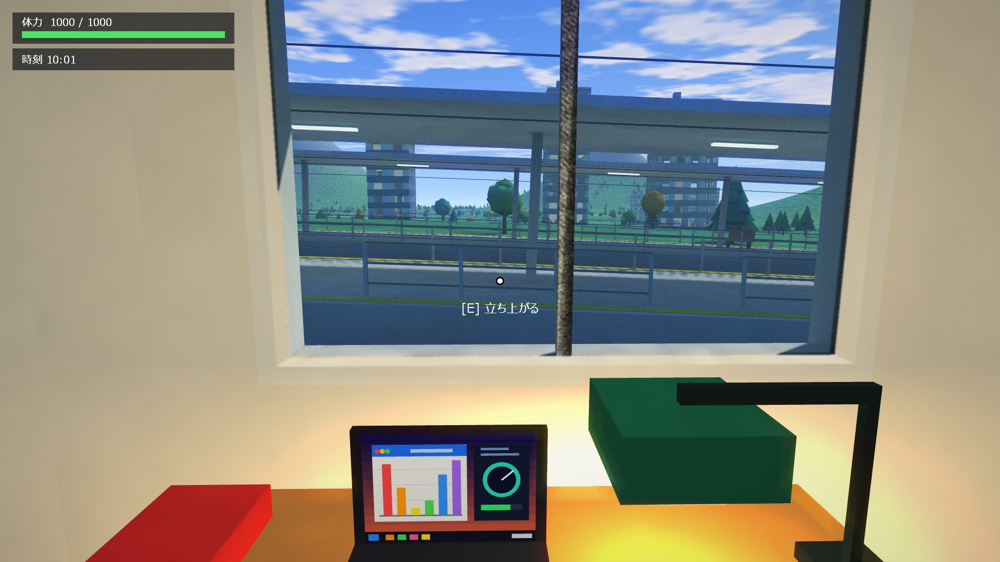
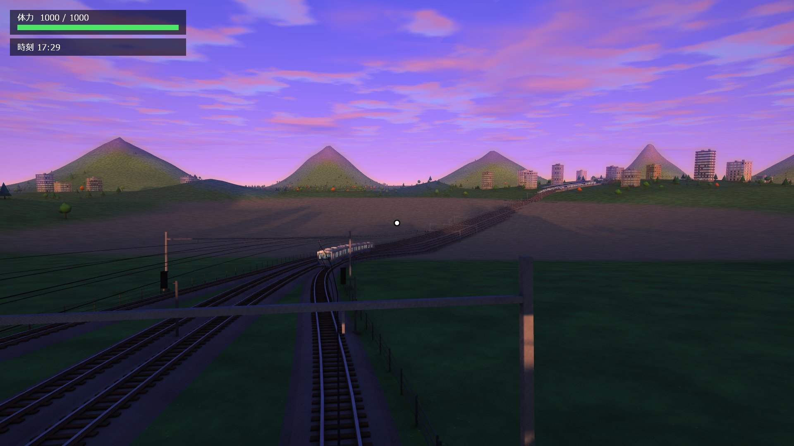
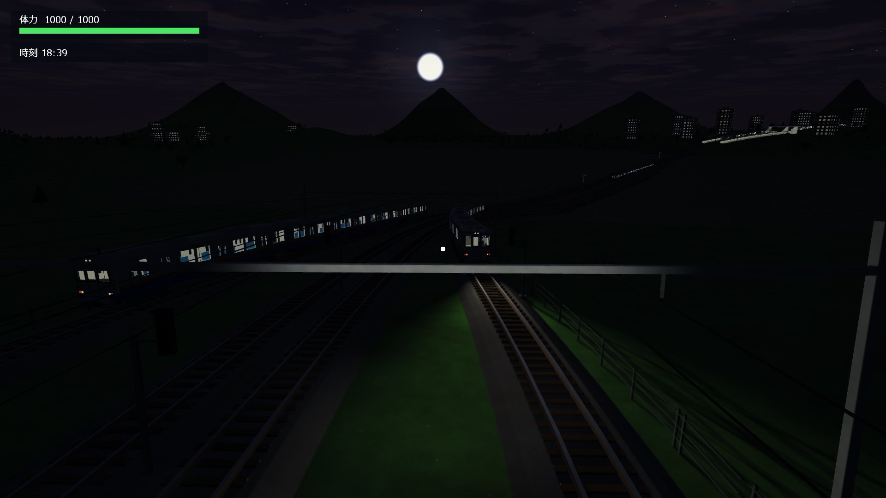

特徴 (Features)
リアルな光と空気感
DirectX 12やレイトレーシングを活用し、時間とともに移り変わる空や光の表現を追求しています。
のんびりとした探索
敵や制限時間はありません。自分のペースで広大な自然や駅の風景を歩いて楽しめます。
鉄道のある風景
自然の中を走る鉄道や、細部まで作り込まれた情景をじっくりと眺めることができます。
ギャラリー (Screenshots)

昼の風景

朝の風景

夕方の風景

夜の風景
動作環境 & 遊び方
対応OS: Windows 10 / 11 (64bit専用)
必須環境: DirectX 12 対応GPU
ダウンロード: 下記のボタンからGitHubのReleasesページへ移動し、最新のzipファイルをダウンロードして解凍してください。
基本操作 (Controls)
| キー / 操作 | アクション |
|---|---|
| W / A / S / D | 移動 |
| マウス移動 | 視点変更 |
| Shift | 走る |
| Eキー / 右クリック | 操作 |
次の一歩
Linux版を開発中!
より多くの方に遊んでいただけるよう、現在Linux版の開発を進めています。続報をお楽しみに！